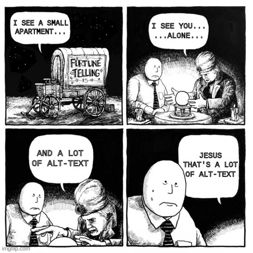
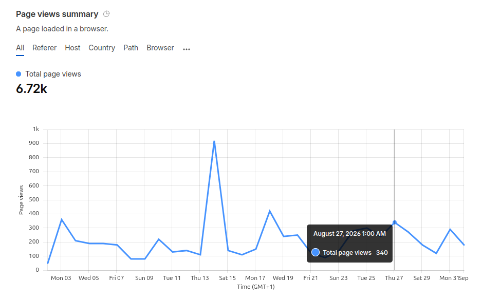
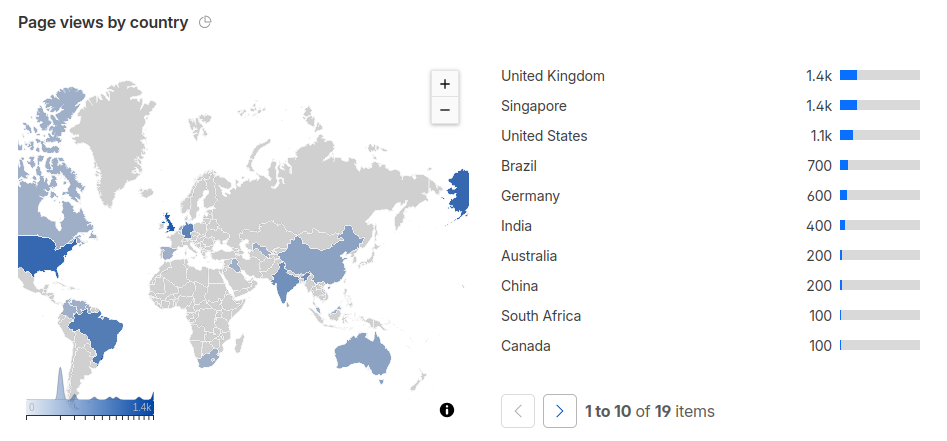
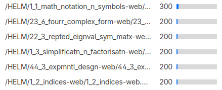
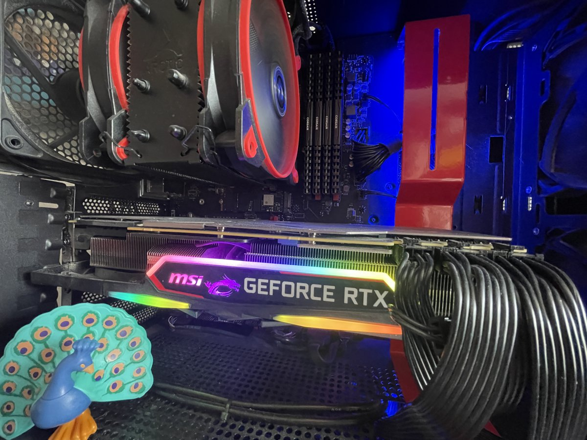
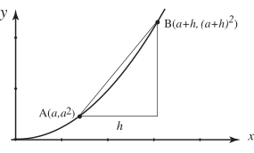
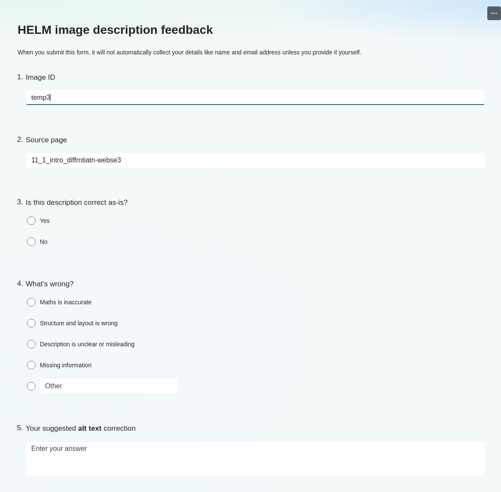

Locally-Run AI for Accessible Maths
Auto-generating alt text and long descriptions for the HELM workbooks
2026-09-03
Background
Background
📚️ Converting a large library of existing resources.
Background
📚️ Converting a large library of existing resources.

Background
📚️ Converting a large library of existing resources.
📖 50 workbooks
Background
📚️ Converting a large library of existing resources.
📖 50 workbooks
👩💻 500+ HTML pages
Background
📚️ Converting a large library of existing resources.
📖 50 workbooks
👩💻 500+ HTML pages
🖼️ 924 diagrams & graphs
Background
📚️ Converting a large library of existing resources.
📖 50 workbooks
👩💻 500+ HTML pages
🖼️ 924 diagrams & graphs
😥 Zero long descriptions in the original resource.
Background
📚️ Converting HELM (Help Engineers Learn Mathematics) a large library of existing resources.
📖 50 workbooks
👩💻 500+ HTML pages
🖼️ 924 diagrams & graphs
😥 Zero long descriptions in the original resource.
😰 Each image needs alt text and a long description — and manual authoring at this scale is simply not feasible.
The Problem
❓ Why do we want accessible resources?
- ⚖️ It’s the law!
- ❤️ It’s the right thing to do.
- 📜 ⭐ Bonus point Public Sector Bodies Accessibility Regulations 2018 require all HE website content to meet WCAG 2.1 AA
- 🏛️ ⭐ Bonus point Reinforced by the Equality Act 2010, which requires reasonable adjustments to digital content
“Almost all internal and external content and systems accessed through a browser fall within scope.” — Jisc
What is HELM?
Helping Engineers Learn Mathematics
- 🎓 Originally created by the HELM consortium
- ♿ Converted to accessible HTML by MASH at the University of Bath, supported by the sigma Network
- ©️ Released under a Creative Commons (BY-NC) licence
- 📐 Covers everything from Basic Algebra to Advanced Statistics


Is HELM still relevant?


Guess HELM’s Most-Viewed Topics
❓ Which HELM topics do students look at most? (shout out your guesses — a match wins a raffle ticket!)
- 🥇 ⭐ Bonus point Mathematical Notation & Symbols — 300 views, the clear #1
- 🌊 Fourier Series — Complex Form (200 views)
- 🔢 Repeated Eigenvalues of Symmetric Matrices (200 views)
- ➗ Simplification & Factorisation (200 views) — appeared twice in the raw data, most consistently searched
- 🧪 Experimental Design (200 views)
- 🔟 Indices (200 views)
- 〰️ Parabolic PDEs (200 views)

Get AI to do it?
.jpg)
Get AI to do it?
Auto-generate alt text with Image Analysis AI microsoft is already doing this - is all this pointless?
Get AI to do it?
Auto-generate alt text with Image Analysis AI microsoft is already doing this - is all this pointless?
But we have to do it anyway.
Why Run AI Locally?
Difficult with University IT policies and unpredictable costs
- 🚫 IT policy gives no command-line or API access to university AI services
- 💸 Commercial APIs (OpenAI, Gemini) are available — but the cost was difficult to predict
How many tokens is a maths diagram?
To be honest - I have no idea!
The local solution
- 🖥️ Ollama — run open-source LLMs locally, no API key needed
- 🤖 gemma4 — Google’s multimodal model, understands mathematical diagrams

Guided by Expertise: The DIAGRAM Centre
The LLM prompt was structured around guidelines from the DIAGRAM Centre’s POET tool
Key principles used:
- 🔍 Context first — what type of image is this?
- 👥 Audience awareness — engineering students need precision
- 📑 Two-tier output — short alt text and long description
- 📐 Maths-specific conventions — axes, units, trends, data tables
- 🔣 LaTeX throughout — all maths in
\( \)notation
POET guidelines cover:
- 📊 Graphs & charts
- 🔺 Geometric figures
- 🔀 Flow charts
- 🗺️ Complex diagrams
- ✏️ Mathematical notation
Into the Weeds
Time to get into the weeds 🌿
Next up: the real prompts, code, and output — stick with me.
The Script: Prompting the Model
Problem: Getting reliable, structured output from an LLM Solution: Use system prompts, user prompts, and JSON mode
System prompt sets the persona and hard rules — things the model must always do, regardless of the image:
User prompt passes the image and its HTML context. context and png_path are variables containing the image’s HTML and the path to the converted PNG:
JSON mode enforces the output structure — no freeform text, no markdown fences, no refusals:
The Script: SVG → PNG → HTML
1. Convert SVG to PNG
HELM images are SVG — great for accessible interaction, but multimodal LLMs require raster input. The script auto-converts using Inkscape (falling back to ImageMagick):
def convert_svg_to_png(svg_path, output_png):
subprocess.run(
f"inkscape --export-type=png "
f"--export-filename={output_png} "
f"{svg_path}", shell=True
)The original SVG stays in the HTML — only PNG goes to the model.
Why SVG → PNG?
HELM images are SVG — which supports accessible interaction (zoom, reflow, screen reader structure).
But multimodal LLMs need raster images. The script converts each SVG to PNG on the fly for the model, while keeping the original SVG in the HTML for users.
2. Write descriptions back into HTML
Alt text is written directly onto the <img> tag. A separate long-description page is created and linked:
To late but an Idea!
What could a more complex model learn from the SVG structure? Could it generate a more accurate description if it could read the SVG DOM?
The Script: Fixing the Output
Fix the output programmatically, not by prompting
It is more reliable — and kinder to the model’s context window — to repair predictable LLM output errors in Python rather than asking the model to self-correct.
Example Output
Input image

Alt text generated:
A graph showing a curve and a secant line segment forming a right triangle, illustrating a concept related to derivatives.
Long description generated (as shown on the linked description page):
- A two-dimensional Cartesian coordinate system; horizontal axis labelled \(x\), vertical axis labelled \(y\)
- A curve passes through two marked points: \(A(a,\, a^2)\) and \(B(a+h,\, (a+h)^2)\)
- A horizontal distance \(h\) is indicated on the \(x\)-axis between the \(x\)-coordinates of the two points, forming the base of a triangle
- A vertical line segment connects the \(y\)-coordinate of \(A\) to the \(y\)-coordinate of \(B\)
- A right-angled triangle is formed by the secant \(AB\) (hypotenuse), the horizontal distance \(h\), and the vertical distance between the projected \(y\)-values
⚠️ This description was generated by AI and has not been verified by a human. If you spot an error, please use the feedback link.
The Human-in-the-Loop System
AI is fast — humans ensure accuracy
The generated descriptions are a starting point, not a final product.
Each long-description page carries a clear notice:
“This description was generated by AI and has not been verified by a human.”
Anyone can feed back via a Microsoft Form linked on every page:
- 👀 View the image alongside its generated description
- ✅ Confirm it is accurate
- ✏️ Suggest an alternative if the description is wrong or incomplete

We Need Your Contributions!
Help us verify 924 descriptions
You don’t need to code — just:
- 🌐 Browse the HELM workbooks
- 🖼️ Find an image with a long description link
- 💬 Tell us if it’s right, or suggest something better
Especially valuable from:
- 🧮 Maths content experts (is the description mathematically precise?)
- ♿ Accessibility specialists (does it follow best practice?)
- 🔊 Screen reader users (is it actually useful?)
How to contribute
Browse the resource:
bathmash.github.io/HELM
Or contact Ed directly:
edrs20@bath.ac.uk
The Technical Stack
| Component | Tool |
|---|---|
| LLM runtime | Ollama |
| Model | gemma4:e4b (multimodal) |
| Image format | SVG → PNG (Inkscape / ImageMagick) |
| Scripting | Python + BeautifulSoup |
| Description guidelines | DIAGRAM Centre / POET |
| Structured output | Ollama JSON mode |
| Feedback | Microsoft Forms (per page) |
| Resource | HELM |
How to contribute
Browse the resource:
bathmash.github.io/HELM
Or contact Ed directly:
edrs20@bath.ac.uk
Everything is free
🆓 Ollama · gemma4 · Python · HELM
Links
- HELM workbooks: bathmash.github.io/HELM
- POET description guidelines: poet.bornaccessible.org
- sigma Network: sigma-network.ac.uk
CETL-MSOR 2026 · edrs20@bath.ac.uk